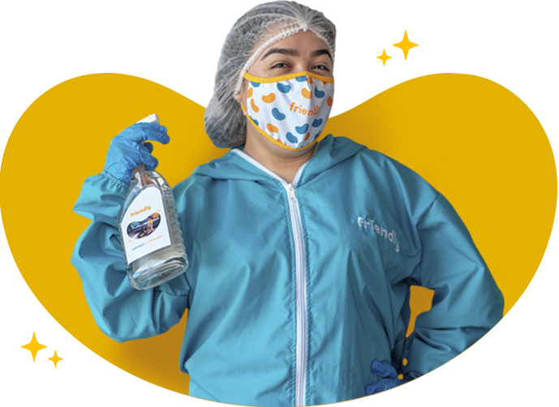
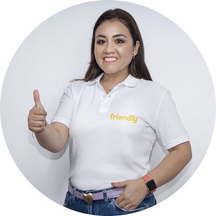
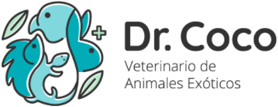
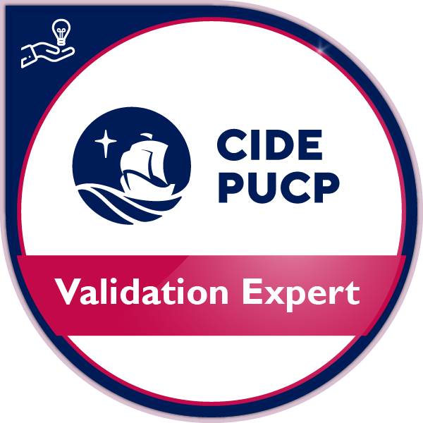

Nacimos a partir de una necesidad no atendida para la limpieza de hogares que cuenten con mascotas, donde se utilicen productos que no sean nocivos para si salud y para las personas. Sabemos que las mascotas son parte de nuestras familias por eso las queremos, cuidamos y respetamos como tal, queremos ayudar a los clientes en esta misión
Reservar¿Por qué
Nosotros?
Buscamos
Tu...
-

Cuidado
Buscamos cuidarte a ti
y a tus seres queridos -

Bienestar
Buscamos que disfrutes
de tu tiempo libre -

Libertad
Buscamos tu bienestar
y tu salud
Nuestro
Equipo
Nuestro personal está altamente capacitado no solo en las tareas de limpieza, sino que también contamos con la asesoría constante de médicos veterinarios para entender los comportamientos de la mascota y los temas relacionados a su salud, cumpliendo cuidadosamente con os protocolos de bioseguridad.
Conoce a
Nuestra
<Fundadora

Paola Cruz
Mi amor por las mascotas me llevo a crear Friendly, que limpia tu casa cuidando y teniendo un trato cordial y digno hacia tu mascota, quien es parte de la familia.
Nos
Respaldan
- 
- 